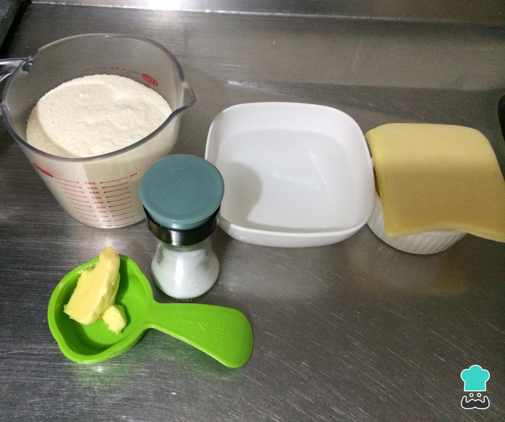
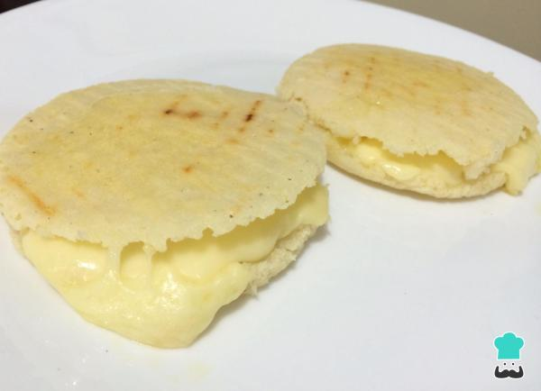

Autor: Pedro Gil Bonett
Arepas Venezolanas
Ingredientes
- 500 gramos de harina de maiz
- 500 militros de agua
- 1 cucharadita de sal
- Queso rebanado tipo paisa
- Mantequilla

Modo de Preparación
- Echa el agua en un bol, añade la cucharadita de sal y disuélvela. Ve agregando la harina precocida de maíz poco a poco. Una vez la hayas echado toda, ve amasando hasta formar una masa homogénea.
- Sigue amasando hasta que te quede completamente integrada. Déjala reposar por unos 5 minutos y retoma el amasado. Si, después de dejarla reposar, la masa está muy líquida o muy seca, añade más harina o agua respectivamente.
- Forma bolitas medianas con la masa, con esta receta te saldrán unas 8 arepas. Comienza a aplanarlas con las palmas de las manos para hacer la forma tradicional de la arepa. Deben quedar de al menos 1 centímetro de grosor.
- Coloca una cucharadita de aceite en una plancha y extiéndelo sobre toda la superficie con ayuda de un papel de cocina. Calienta y lleva las arepas a la plancha. Cocina a fuego bajo hasta que veas que se han endurecido de un lado. Entonces, voltéalas y déjalas dorar por el otro lado.
- Haz un corte en uno de los lados de las arepas y ve cortando a lo largo de toda la circunferencia. Ábrelas y rellénalas con queso y mantequilla. Este paso es opcional, pero puedes meterlas todas al horno por 10 minutos a 170 ºC para que el queso se derrita y las arepas se doren un poco más.
- Sirve tus arepas venezolanas en el desayuno o cena y disfrútalas. No hace falta que las acompañes con nada más que un delicioso jugo de frutas. ¡Buen provecho!
